Usage Billing — Allowance, Rollover & Overage
Most subscriptions bill a simple flat fee. This advanced deep dive follows XYZ Corporation's smart micro-market through a usage-based plan with a prepaid allowance, rollover of unused units, and overage billed in arrears — across four monthly cycles and one mid-cycle amendment. Each beat is told twice: the story in the micro-market on top, and the same beat on the balance register below.
The Storyboard
📱 On mobile? Pinch to zoom on any panel to read the tables, gauges and speech bubbles clearly. Each numbered step shows the micro-market scene on top and the balance-register mechanics below.
1Install Day & the Prepaid Plan
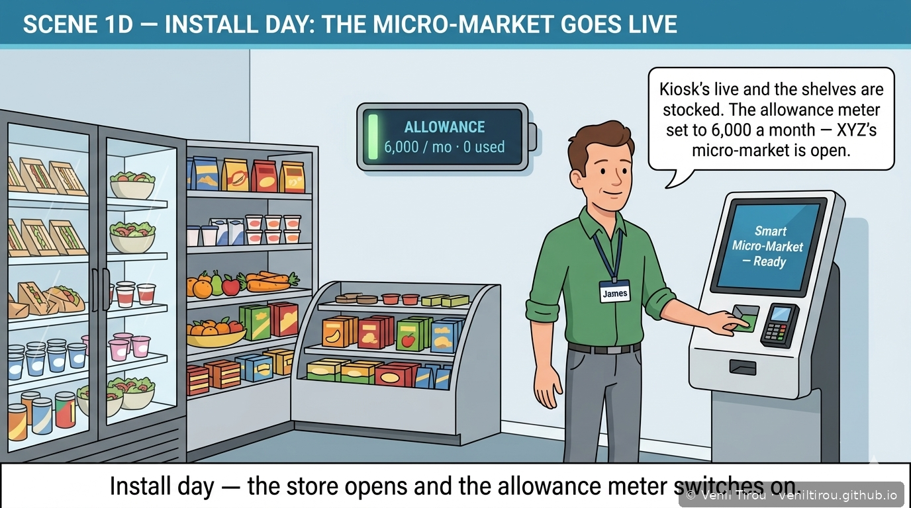
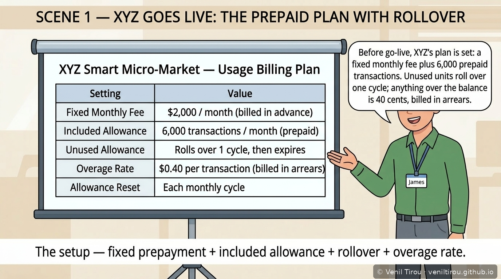
XYZ's micro-market opens and the prepaid plan is set — 6,000 transactions a month, unused units roll over one cycle, overage at $0.40 billed in arrears.
2Month 1 — Within Allowance, Unused Rolls Over
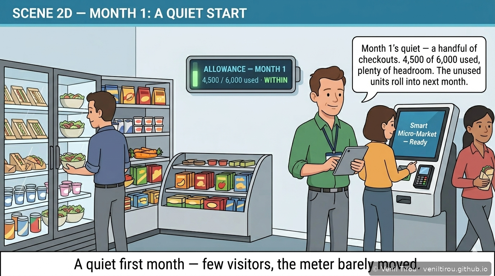
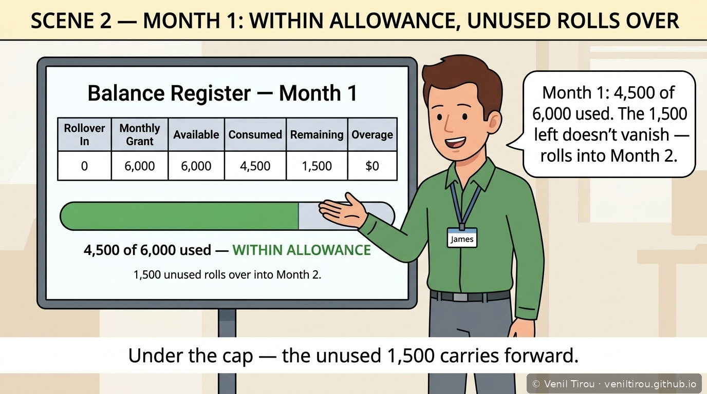
A quiet first month — 4,500 of 6,000 used. The unused 1,500 doesn't vanish; it rolls into Month 2.
3Month 2 — Rollover Used First, Spike Absorbed
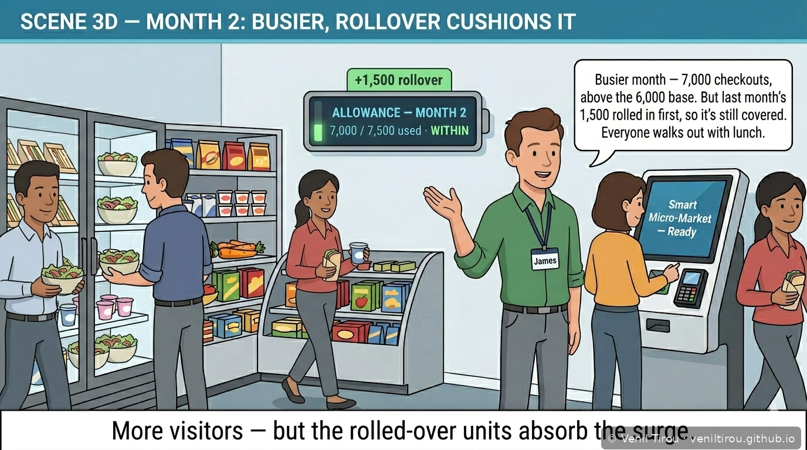
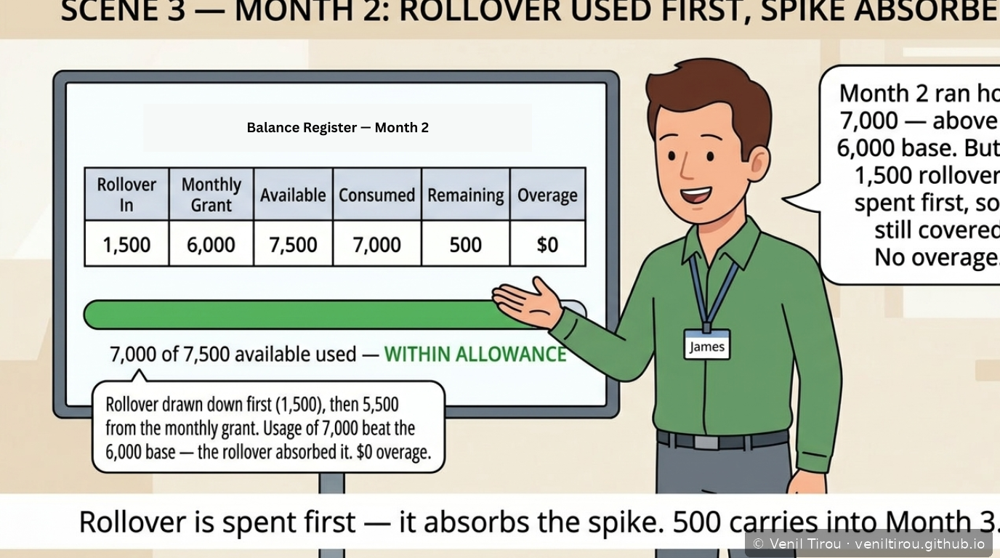
Busier — 7,000 checkouts, above the 6,000 base. But the rolled-over 1,500 is spent first, so it's still covered. No overage; 500 carries into Month 3.
4Month 3 — Headcount Jump → Overage in Arrears
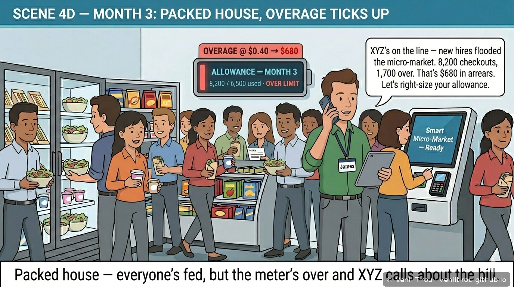
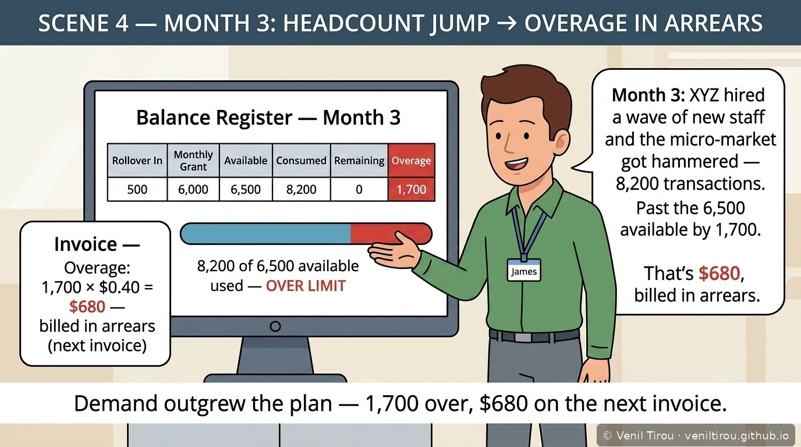
New hires flood the micro-market — 8,200 checkouts, 1,700 over. Everyone's still served; the excess is rated at $0.40 and billed in arrears: $680 on the next invoice.
5The Amendment — Right-Size the Allowance, Mid-Cycle
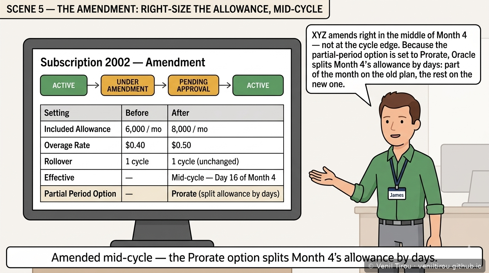
XYZ calls. Rather than keep paying overage, the plan is amended mid-cycle — allowance up to 8,000, overage rate to $0.50 — and because the partial-period option is Prorate, Month 4's allowance splits by days.
6Month 4 — Right-Sized, the Prorated Split, Exactly Met
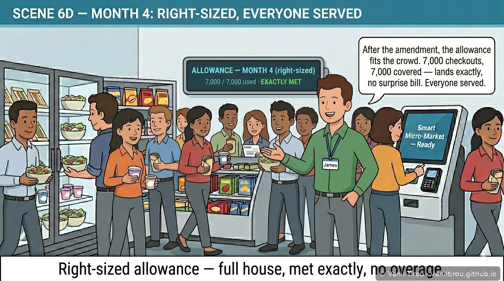
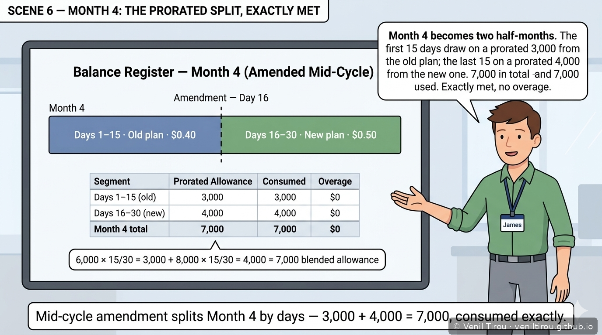
On the right-sized plan, Month 4 splits into a prorated 3,000 (old) + 4,000 (new) = 7,000 — and 7,000 is exactly used. Full house, no surprise bill.
7Four Cycles, One Balance Register
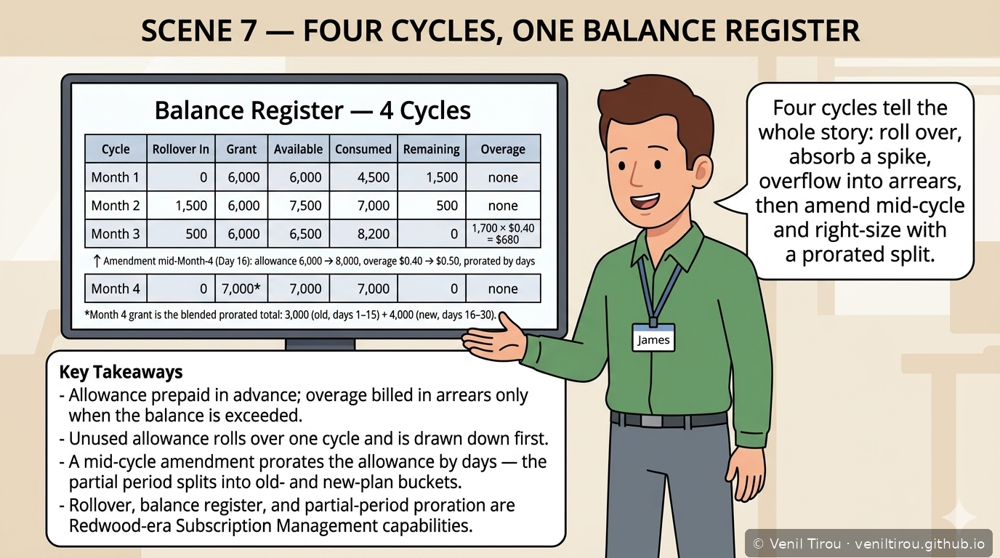
Four cycles in one balance register: roll over, absorb a spike, overflow into arrears, then amend mid-cycle and right-size. Allowance prepaid in advance; overage billed in arrears only when exceeded.
Why This Chapter Matters
Concepts Covered
| Concept | What it means | Step |
|---|---|---|
| Entitlement plan / prepaid allowance | Included units prepaid in advance for each cycle, set on the subscription plan. | 1 |
| Advance vs. arrears billing | The allowance is billed in advance; overage is billed in arrears, only when the balance is exceeded. | 1, 4, 7 |
| Balance register | The ledger of rollover-in, grant, available, consumed, remaining and overage for each cycle. | 2–4, 7 |
| Rollover | Unused allowance carries forward one cycle instead of expiring at reset. | 2–3 |
| Drawdown order | Rolled-over (sooner-expiring) units are consumed before the current cycle's grant. | 3 |
| Overage in arrears | Usage above the available balance is rated and billed on the next invoice — no service is denied. | 4 |
| Mid-cycle amendment | Changing the plan partway through a cycle, not only at renewal. | 5 |
| Partial-period proration | The Prorate partial-period option splits the affected period's allowance by days between the old and new plan. | 5–6 |